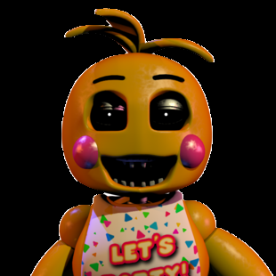

Toy Chica

“Isn't a good party just to die for?”
- Toy Chica
- Toy Chica is one of the toy animatronics who first debuts in Five Nights at Freddy's 2. She is a redesign of the original Chica.
Physical Appearance
- Toy Chica takes the appearance of a stereotypical feminine character. She is a yellow-orange chicken with an orange beak, blue eyes, purple eyelids, long eyelashes, and orange feet. She has a few stray "feathers" that stick out from the top of her head. She has blushed cheeks, like the other toy animatronics, though hers are pink rather than red. Unlike her original counterpart, Toy Chica's body is noticeably curvy, rather than simply round and ovular, as is the original Chica's.
- Just like the original Chica, Toy Chica has a bib. However, her bib reads "LET'S PARTY!", rather than "LET'S EAT!!!". The bib also has tiny colorized flecks (being green, blue, yellow and pink) like the original Chica, which appear like tiny pizza slices or confetti. She wears a pink garment on her lower body and almost always carries a pink cupcake with large eyes, similar to the one her original counterpart held on the Show Stage, as well as the same one in the Office, from Five Nights at Freddy's.
- While on the Show Stage, Toy Chica can be seen with her normal eyes, eyelids, and beak. However, she removes them once she leaves the stage, and she can be seen beakless and eyeless, save for her glossy-black eyes with white pupils (for paranormal reasons), as seen through the cameras in various rooms. Without her beak, her endoskeleton teeth, which resemble human teeth, are visible. She looks like she's smiling when lacking her beak. Her eyelids are also missing, exposing the metal ones of an endoskeleton.
- Toy Cupcake, being the toy counterpart of Cupcake, is smaller with a different-styled birthday candle and its eyes being blue instead of yellow. It also lacks the teeth its original counterpart had.

Alias
New Chica
Occupation
Backup Singer
Affiliation
Freddy Fazbear's Pizza (1987)
Owner
Fazbear Entertainment, Inc.
Companion
Toy Cupcake
Voice Provider
Amber Lee Connors
Mascot
Chicken
Skin Color
Yellow
Eye Color
Blue
Gender
Female
Animatronic Set
Toys
Personality
- In Ultimate Custom Night and Special Delivery, Toy Chica seems sadistic, psychotic, and bloodthirsty. She also seems to be curiously aware that not only is her beak missing, but also that it is lodged within the protagonist's cranium. Her lines in Special Delivery suggest that she is also a bit sardonic when tormenting her victims, but also impatient, as shown from some of her lines. All her personality traits combined into one make her a seductive psychopath to the player. The fact that her bib reads "Let's Party" suggests she is a party animal.